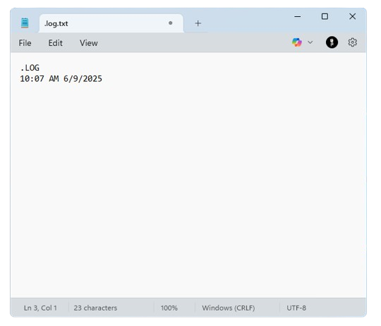
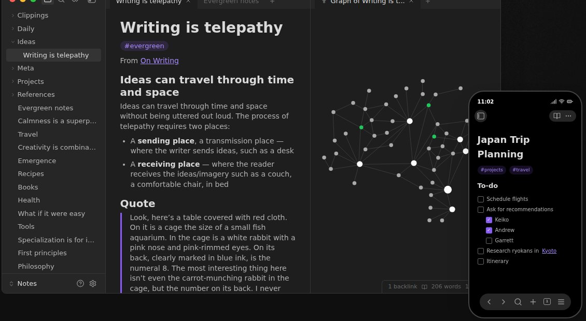
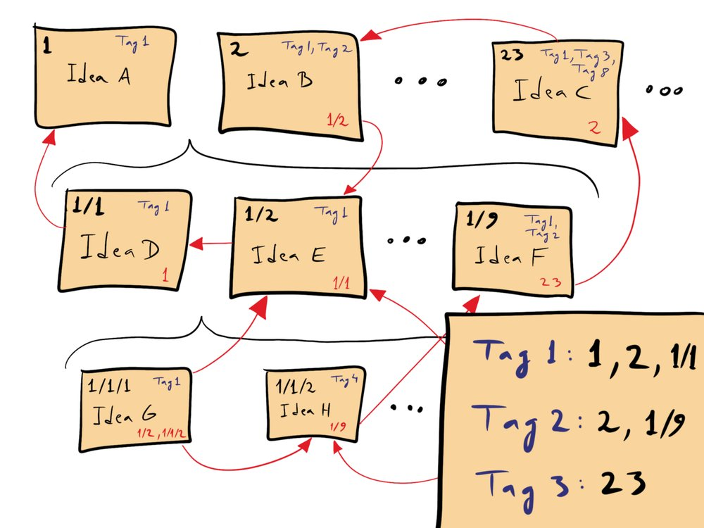
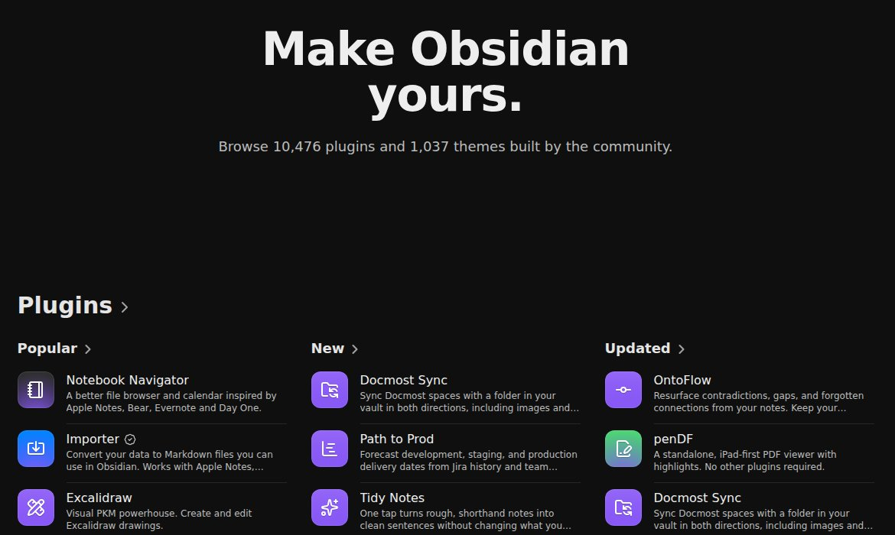

AI 문맹탈출을 위한 기본 도구 익히기 · 2강
마크다운과 옵시디언
사람과 AI의 공용어
기호 몇 개로 글에 힘을 싣고, 생각을 연결해 쌓는 법
# 오늘의 노트
지난 시간 복습
에이전트는 메모 파일을 읽고 일을 이어 갑니다
# 독서 블로그 프로젝트 ## 규칙 - 글은 **존댓말**로 쓴다 - 사진은 `img/` 폴더에 넣는다 ## 다음 할 일 - [ ] 태그별 모아보기
이 메모에 섞여 있는 #, -, ** 같은 기호들, 기억나시나요?
이게 오늘 배울
마크다운입니다
사람도 읽기 쉽고, AI도 읽기 쉬운 글쓰기 방식이에요.
아이스 브레이킹
ChatGPT 답변을 복사했더니 이상한 별표가 딸려 온 적 있나요?
## 제주 2박 3일 추천 일정 **1일차**: 공항 → 협재 해수욕장 **2일차**: 성산일출봉 → 우도 - 우도는 *전기 자전거* 추천
제주 2박 3일 추천 일정
1일차: 공항 → 협재 해수욕장
2일차: 성산일출봉 → 우도
- 우도는 전기 자전거 추천
AI는 사실 마크다운으로 답하고, 화면이 그걸 예쁘게 바꿔서 보여 준 거예요. 별표는 "여기 굵게"라는 표시였습니다.
Part 1
마크다운, 증강된 텍스트
기호 몇 개로 글에 구조를 입히기
일반 텍스트의 한계
메모장의 글은
모두 똑같은 글자입니다
- 어디가 제목이고 어디가 본문인지 알 수 없어요.
- 강조도, 목록도, 표도 만들 수 없어요.
- 사람은 눈치로 읽지만, 컴퓨터와 AI는 구조를 짐작해야 합니다.
한글·워드는 서식을 넣을 수 있지만, 대신 파일이 그 프로그램 안에 갇힙니다. (조금 뒤에 다시 이야기해요)

Windows 메모장 · Yuika Izumi, CC BY-SA 4.0 · Wikimedia Commons마크다운이란?
평범한 글자에 기호 몇 개를 더해
구조와 의미를 입힌 글
그래서 증강된 텍스트라고 부를 수 있어요. 글자는 그대로인데, 할 수 있는 일이 훨씬 많아집니다.
- 공책에 쓸 때 제목 앞에 #, 목록 앞에 -, 중요한 말에 별표를 치던 습관 그대로예요.
- 2004년 존 그루버가 "쓰기 쉽고 읽기 쉬운 글"을 목표로 만들었어요.
- 복잡한 웹 문법(마크업)을 쉽게 만들었다고 해서 마크다운이라는 말장난 이름이 붙었어요.
 Markdown 로고 · Dustin Curtis, CC0
Markdown 로고 · Dustin Curtis, CC0
한눈에 보기
왼쪽처럼 쓰면, 오른쪽처럼 보입니다
# 나의 독서 기록 ## 2026년 11월 - **아주 작은 습관의 힘** - 사피엔스 ~~(읽는 중)~~ 완독! > 습관은 복리로 쌓인다. - [x] 독서 모임 신청 - [ ] 서평 쓰기
나의 독서 기록
2026년 11월
- 아주 작은 습관의 힘
- 사피엔스
(읽는 중)완독!
습관은 복리로 쌓인다.
- ☑ 독서 모임 신청
- ☐ 서평 쓰기
문법 ① 제목
#의 개수가 글의 수준을 정합니다
# 책 제목 ## 1장 ### 1절 #### 소제목
책 제목
1장
1절
소제목
책의 장 › 절 › 항처럼 계층이 생겨요. 덕분에 목차가 자동으로 만들어지고, AI도 글의 뼈대를 한눈에 파악합니다. (# 다음에 한 칸 띄우기!)
문법 ② 강조
형광펜과 밑줄 대신 기호로 감싸기
| 이렇게 쓰면 | 이렇게 보여요 | 언제 쓰나 |
|---|---|---|
**굵게** | 굵게 | 가장 중요한 말 |
*기울임* | 기울임 | 책 제목, 살짝 강조 |
~~취소선~~ | 지운 내용, 끝난 일 | |
`코드` | 코드 | 파일 이름, 명령어 |
==형광펜== | 형광펜 | 옵시디언 등 일부 앱에서 지원 |
워드에서는 마우스로 블록을 잡고 버튼을 눌렀다면, 마크다운에서는 키보드에서 손을 떼지 않고 강조합니다.
문법 ③ 목록과 할 일
장보기 목록처럼, 줄 앞에 기호 하나
순서 없는 목록
- 두부 - 김치 - 묵은지로
- 두부
- 김치
- 묵은지로
순서 있는 목록
1. 김치 볶기 2. 물 붓기 3. 두부 넣기
- 김치 볶기
- 물 붓기
- 두부 넣기
체크리스트
- [x] 장보기 - [ ] 요리하기 - [ ] 설거지
- ☑ 장보기
- ☐ 요리하기
- ☐ 설거지
두 칸 들여 쓰면 하위 목록이 됩니다. AI에게 일을 시킬 때 체크리스트로 주면 하나씩 지워 가며 처리해요.
문법 ④ 링크 · 이미지 · 인용 · 표
| 이렇게 쓰면 | 결과 |
|---|---|
[네이버](https://naver.com) | 누르면 이동하는 링크: 네이버 |
 | 그림을 글 속에 넣기 (링크 앞에 !) |
> 인상 깊은 문장 | 책에서 옮긴 인용문 상자 |
--- | 가로 구분선 |
| 책 | 저자 | 별점 | |---|---|---| | 사피엔스 | 하라리 | 5 | | 코스모스 | 세이건 | 4 |
| 책 | 저자 | 별점 |
|---|---|---|
| 사피엔스 | 하라리 | 5 |
| 코스모스 | 세이건 | 4 |
한 장 요약
이것만 알면 90%는 씁니다
제목
#, ##, ###
굵게
**중요**
목록
- 항목, 1. 순서
할 일
- [ ] 할 일
인용
> 좋은 문장
링크
[글](주소)
코드
`파일.md`
표
| 칸 | 칸 |
매우 간단한 문법인데, 이것만으로 보고서, 기획서, 책 원고까지 쓸 수 있어요.
왜 AI 친화적인가
AI는 마크다운으로 읽고, 생각하고, 답합니다
구조가 분명하다
어디가 제목이고 목록인지 기호로 드러나서, AI가 헷갈리지 않아요.
군더더기가 없다
워드 파일 속 숨은 서식 정보 없이 글자만 있어서 AI가 빠르고 정확하게 읽어요.
AI의 기본 말투다
ChatGPT, Claude, Gemini 모두 답을 마크다운으로 써요. 서로 같은 언어를 쓰는 셈이죠.
그래서 AI에게 일을 맡길 때도 마크다운으로 정리해서 부탁하면 훨씬 잘 알아듣습니다. 다음 장에서 볼게요.
실전 팁 · AI에게 부탁하기
같은 부탁도 정리해서 말하면 결과가 달라요
독서모임 공지 좀 써줘 이번엔 사피엔스고 12월 6일 토요일 오후 2시 강남역 근처 카페에서 하고 회비는 만원이고 1장부터 5장까지 읽어 오라고 하고 너무 딱딱하지 않게
## 할 일 독서모임 공지 쓰기 (**친근한 말투**) ## 정보 - 책: 사피엔스 (1~5장) - 일시: 12/6(토) 오후 2시 - 장소: 강남역 근처 카페 - 회비: 1만 원
빠뜨린 정보가 없는지 나도 한눈에 확인할 수 있다는 것이 덤입니다.
파일 이야기
마크다운 파일은 .md, 그리고 메모장이면 충분합니다
| 확장자 | 열려면 필요한 것 | 못 열면? |
|---|---|---|
| .hwp | 한글(한컴오피스) | 외국 친구, 맥 사용자는 곤란 |
| .docx | MS 워드 | 유료 구독이 필요할 수 있음 |
| PDF 뷰어 | 읽기는 쉽지만 고치기는 어려움 | |
| .md | 아무 메모장 | 그런 일 없음. 휴대폰 메모 앱으로도 열림 |
.md 파일은 그냥 글자 파일이에요. 프로그램 회사가 문을 닫아도, 30년 뒤에도 그대로 열립니다.
직접 비교
두 파일을 메모장으로 열어 보면…
# 사피엔스 **저자**: 유발 하라리 ## 인상 깊은 문장 > 허구를 믿는 능력이 > 협력을 가능하게 했다. ## 내 생각 - 돈, 국가, 회사도 '함께 믿는 이야기'
.hwp는 한글 프로그램만 알아보는 암호처럼 보이지만, .md는 누구나, 어떤 기기로든 그대로 읽힙니다.
정리
마크다운이 각광받는 이유: 사람과 AI 모두에게 편하다
🙂 사람에게
- 기호가 직관적이라 원문 그대로 읽어도 이해됨
- 키보드만으로 빠르게 서식
- 어떤 기기·앱에서도 열림
- 파일이 아주 가벼움
🤖 AI에게
- 구조가 기호로 드러나 정확히 이해
- 숨은 서식 없이 글자만 있어 빠르게 처리
- 답을 쓸 때도 그대로 마크다운
- 파일을 직접 읽고 고치기 쉬움
이미 곳곳에서 쓰여요. 노션, 디스코드, 슬랙, 깃허브, 티스토리, 그리고 모든 AI 답변.
Part 2
옵시디언, 생각을 쌓는 서재
마크다운을 가장 잘 다루는 메모 도구
옵시디언(Obsidian)이란?
마크다운으로 쓰는
나만의 지식 창고
- 무료 (개인·업무 모두)
- 윈도우 · 맥 · 아이폰 · 안드로이드 지원
- 모든 메모가 내 컴퓨터에 .md 파일로 저장
- 메모끼리 링크로 연결하는 것이 핵심
이름은 '흑요석'이라는 검은 화산 유리에서 왔어요.

obsidian.md 공식 홈페이지 화면 캡처 (2026년 11월) · 로고: Obsidian, CC BY 4.0핵심 ① 보관함(Vault)
보관함은 그냥 내 컴퓨터의 폴더입니다
노션, 에버노트
메모가 회사 서버에 있어요. 회사 정책이 바뀌거나 서비스가 끝나면 곤란.
옵시디언
메모가 내 폴더에 있어요. 앱을 지워도 파일은 그대로, 메모장으로도 열림.
그냥 폴더라서 1강에서 배운 터미널 AI가 바로 읽을 수 있어요. 이게 아주 중요합니다.
핵심 ② 링크와 백링크
[[ ]] 두 겹 괄호로 메모와 메모를 잇기
# 사피엔스 인간은 허구를 믿는 능력으로 협력했다. [[아주 작은 습관의 힘]]의 '정체성' 이야기와도 통한다. 관련: [[돈이란 무엇인가]]
🔗 파란 글자를 누르면 그 메모로 이동
↩️ '아주 작은 습관의 힘' 메모에는 "사피엔스가 나를 언급함"이 자동 표시 (백링크)
✨ 아직 없는 메모도 링크부터 걸고, 누르면 새로 생성
위키백과에서 파란 링크를 따라 계속 읽어 가던 경험, 그걸 나만의 위키로 만드는 거예요.
핵심 ③ 그래프 뷰
내 생각의 지도를
눈으로 봅니다
- 점 하나 = 메모 하나
- 선 하나 = 링크 하나
- 큰 점 = 여러 메모가 가리키는 핵심 생각
책을 많이 읽을수록 그물이 촘촘해지고, 전혀 다른 책 사이의 연결이 눈에 들어옵니다.
그 밖의 기본 기능
설치만 하면 바로 쓰는 기본 도구들
태그
#역사 #습관처럼 붙이면 주제별로 모아 보기
빠른 검색
수천 개 메모에서도 단어 하나로 순식간에 찾기
데일리 노트
버튼 한 번에 오늘 날짜 메모 생성. 일기·업무일지에 딱
템플릿
'독서노트 양식'을 만들어 두고 매번 불러오기
캔버스
메모와 그림을 화이트보드처럼 펼쳐 놓고 배치
PDF로 내보내기
쓴 글을 바로 PDF로. 출판사·모임에 보내기
작가에게 옵시디언이 잘 맞는 이유
읽은 것을 쌓고,
쌓은 것으로 씁니다
[[링크]]로 연결
제텔카스텐 개념도 · David B. Clear, CC BY-SA 4.0 · Wikimedia Commons이 방법의 원조
독일 사회학자 니클라스 루만은
메모 카드 약 9만 장을 서로 연결해
70권이 넘는 책을 썼습니다
이 방법을 '제텔카스텐(메모 상자)'이라고 불러요. 루만은 나무 상자와 종이 카드로 했지만, 우리는 옵시디언으로 훨씬 쉽게 할 수 있습니다.
예시 · 독서노트 템플릿
# 아주 작은 습관의 힘 - 저자: 제임스 클리어 - 읽은 날: 2026-11-10 - 별점: ⭐⭐⭐⭐⭐ - 태그: #습관 #자기계발 ## 인상 깊은 문장 > 목표가 아니라 시스템에 집중하라. ## 내 생각 - 매일 글쓰기도 **시스템**이다 - [[사피엔스]]의 정체성 이야기와 연결
아주 작은 습관의 힘
- 저자: 제임스 클리어
- 읽은 날: 2026-11-10
- 별점: ⭐⭐⭐⭐⭐
- 태그: #습관 #자기계발
인상 깊은 문장
목표가 아니라 시스템에 집중하라.
내 생각
- 매일 글쓰기도 시스템이다
- 사피엔스의 정체성 이야기와 연결
커뮤니티 플러그인
VS Code처럼 확장 프로그램으로
내 서재를 키웁니다
| 플러그인 | 하는 일 |
|---|---|
| Pandoc | 워드(.docx), 전자책(.epub) 등으로 변환 |
| Dataview | 독서노트를 모아 '올해 읽은 책' 표 자동 생성 |
| Calendar | 달력에서 날짜별 일기 열기 |
| Excalidraw | 손그림 같은 도식 그리기 |
| Importer | 노션·에버노트 메모 가져오기 (공식) |
PDF 내보내기는 플러그인 없이 기본 기능으로 됩니다.

Obsidian 커뮤니티 사이트 화면 캡처 (2026년 11월) · 플러그인 1만 개 이상1강과 연결하기
내 서재 폴더에서 터미널 AI를 켜면?
> 올해 읽은 책 노트에서 '습관'과 관련된 문장을 모아서 새 메모로 정리해줘 ● 독서노트 폴더의 메모 48개를 읽었어요. ● 7권에서 관련 문장 23개를 찾았어요. ● '습관에 대한 문장 모음.md'를 만들었어요. 각 문장 아래에 [[책 이름]] 링크를 달아서 원래 노트로 바로 갈 수 있어요.
📝 내가 쓴 모든 기록이 AI의 재료가 됩니다
🔗 AI가 만든 메모도 마크다운이라 그대로 내 서재에 섞여요
🔒 파일이 내 컴퓨터에 있어 내가 통제합니다
시작하기
5분이면 첫 메모를 씁니다
obsidian.md 에 들어가 내 컴퓨터에 맞는 버전 설치# 제목, - 목록, **굵게**를 써 보기[[다음 책]]이라고 쓰고 눌러서 새 메모가 생기는지 확인설정 › 일반에서 언어를 한국어로 바꿀 수 있어요.
용어 정리
| 용어 | 한 줄 뜻 |
|---|---|
| 마크다운 | 기호 몇 개로 글에 구조를 입히는 쓰기 방식 |
| .md | 마크다운 파일의 확장자. 메모장으로 열림 |
| 렌더링 | 마크다운 원문을 보기 좋은 모양으로 바꿔 보여 주는 것 |
| 옵시디언 | 마크다운으로 쓰고 링크로 연결하는 메모 앱 |
| 보관함(Vault) | 옵시디언 메모가 들어 있는 내 컴퓨터의 폴더 |
| 링크 · 백링크 | [[ ]]로 메모를 잇기 · 나를 가리키는 메모 목록 |
| 그래프 뷰 | 메모와 링크를 점과 선으로 그린 생각의 지도 |
| 플러그인 | 옵시디언에 기능을 더하는 확장 프로그램 |
이번 주 해 볼 것
나의 첫 번째 서재 만들기
#), 굵게(**), 목록(-), 인용(>)을 한 번씩 써 보기[[링크]]를 걸고 그래프 뷰에서 점 두 개가 이어진 것 확인이미지 출처
- Windows 메모장 화면: Yuika Izumi, CC BY-SA 4.0, Wikimedia Commons
- Markdown 로고: Dustin Curtis, CC0, Wikimedia Commons
- Obsidian 로고: Obsidian (Dynalist Inc.), CC BY 4.0, Wikimedia Commons
- Obsidian 앱 화면: obsidian.md 공식 홈페이지 캡처 (2026년 11월)
- Obsidian 플러그인 화면: Obsidian 커뮤니티 사이트 캡처 (2026년 11월)
- 제텔카스텐 개념도: David B. Clear, CC BY-SA 4.0, Wikimedia Commons
- 그 밖의 메모·터미널 화면은 설명을 위해 직접 재구성한 예시입니다.